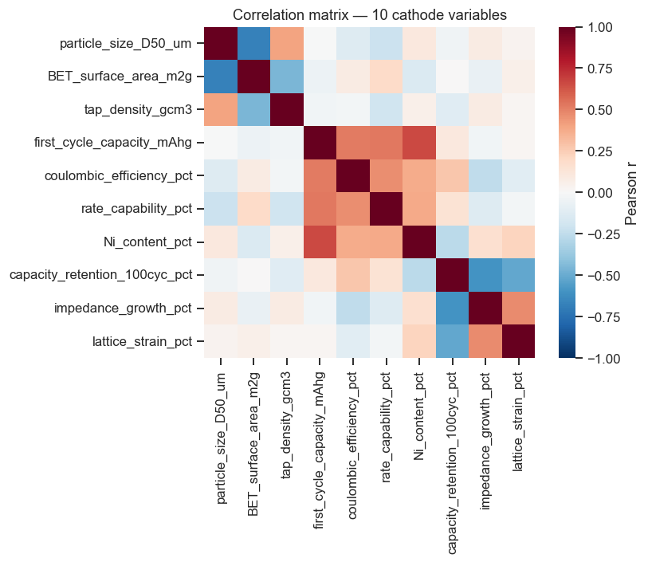
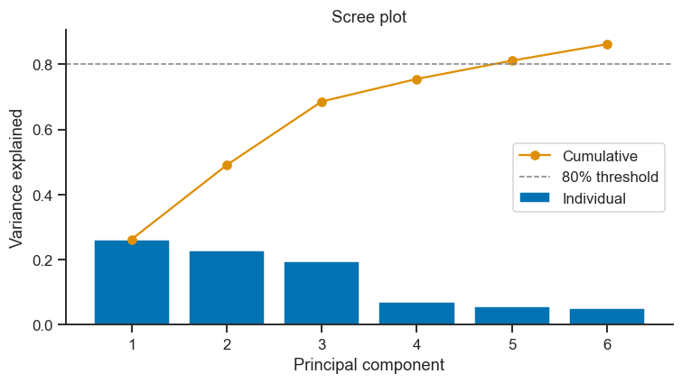
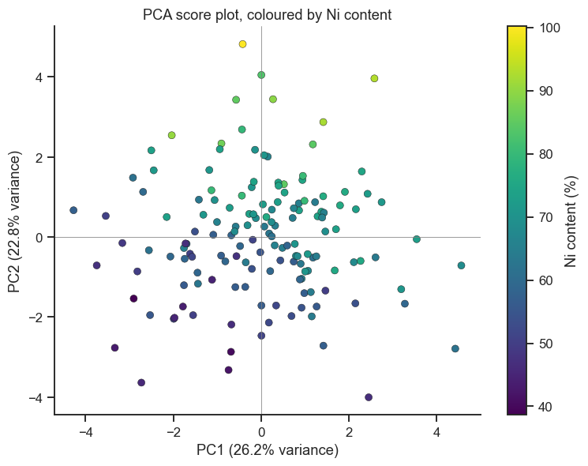
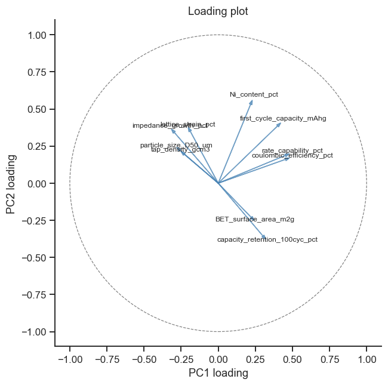
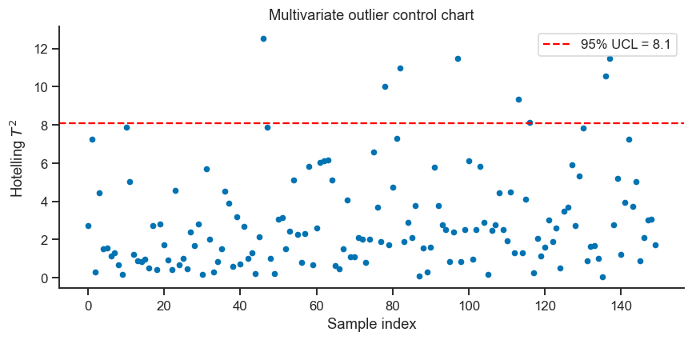
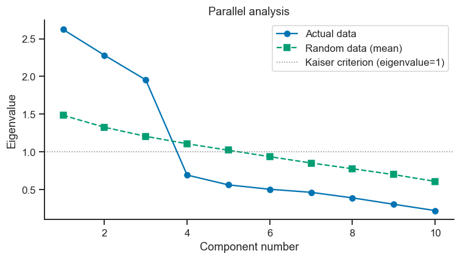
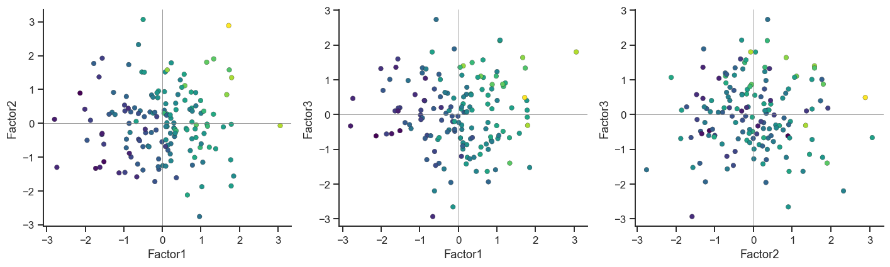

16. Live Tutorial 1: PCA & Factor Analysis — Finding Structure in a Cathode Database#
A materials-informatics team has characterised 150 NMC-type Li-ion cathode materials, recording 10 measurements per sample — particle morphology, electrochemical performance, and cycling stability. No single column tells the whole story, and plotting 10 variables pairwise means \(\binom{10}{2}=45\) scatter plots. This session uses that one dataset to learn PCA (compress correlated variables into a handful of interpretable axes) and Factor Analysis (go one step further and recover the hidden physical drivers behind the correlations) — the two methods theory.md pairs together because they answer closely related questions with genuinely different assumptions.
We build PCA from scratch in raw NumPy before ever calling sklearn — the
goal is that by the end, “principal component” means a specific, concrete
linear-algebra object you built with your own hands, not a black-box
output.
Session plan
The problem: 10 correlated columns, one dataset
PCA from scratch (NumPy only) — and proof it matches
sklearnApplying PCA: scree, scores, loadings, biplot
Hotelling’s T²: a genuine multivariate outlier/control-chart tool
From PCA to Factor Analysis: what changes, and why
How many factors? Parallel analysis
Fitting and rotating the factor model
PCA vs. FA, side by side
Going further: factor scores as compressed predictors
import numpy as np
import pandas as pd
import matplotlib.pyplot as plt
import seaborn as sns
sns.set_theme(style='ticks', palette='colorblind')
plt.rcParams.update({'figure.dpi': 110, 'font.size': 11})
rng = np.random.default_rng(42)
16.1 The Dataset: 150 Cathode Materials, 10 Variables#
Three physically distinct aspects of a cathode material drive these ten measurements, though the dataset itself does not label them — finding that structure is the exercise:
Particle morphology: how big the particles are, how much surface area they expose, how densely they pack.
Electrochemical performance: how much charge the material stores and how fast it can deliver it.
Cycling stability: how well performance holds up over repeated use.
One deliberate, real piece of materials chemistry is built into this data: nickel content in NMC cathodes drives capacity up but cycling stability down — the central Ni-Mn-Co trade-off that motivates most cathode formulation work. Watch for it to reappear in the loadings.
n = 150
F_true = rng.normal(0, 1, size=(n, 3)) # 3 hidden factors: Morphology, Performance, Stability
# variable: (loading on Morphology, Performance, Stability)
loadings_true = {
'particle_size_D50_um': (0.85, 0.00, 0.00),
'BET_surface_area_m2g': (-0.80, 0.00, 0.00),
'tap_density_gcm3': (0.70, 0.00, 0.00),
'first_cycle_capacity_mAhg': (0.00, 0.85, 0.00),
'coulombic_efficiency_pct': (0.00, 0.60, 0.20),
'rate_capability_pct': (-0.30, 0.70, 0.00),
'Ni_content_pct': (0.00, 0.75, -0.40),
'capacity_retention_100cyc_pct': (0.00, 0.00, 0.85),
'impedance_growth_pct': (0.00, 0.00, -0.75),
'lattice_strain_pct': (0.00, 0.00, -0.65),
}
# realistic (mean, std) in natural units for each variable
units = {
'particle_size_D50_um': (8.0, 2.5),
'BET_surface_area_m2g': (0.6, 0.15),
'tap_density_gcm3': (2.3, 0.30),
'first_cycle_capacity_mAhg': (175, 15),
'coulombic_efficiency_pct': (88, 3),
'rate_capability_pct': (80, 8),
'Ni_content_pct': (65, 12),
'capacity_retention_100cyc_pct': (90, 5),
'impedance_growth_pct': (25, 10),
'lattice_strain_pct': (0.35, 0.10),
}
data = {}
for var, (l1, l2, l3) in loadings_true.items():
unique_var = max(1e-6, 1 - (l1**2 + l2**2 + l3**2))
z = l1*F_true[:, 0] + l2*F_true[:, 1] + l3*F_true[:, 2] + rng.normal(0, np.sqrt(unique_var), n)
mean, sd = units[var]
data[var] = mean + sd * z
df_cathode = pd.DataFrame(data)
df_cathode.insert(0, 'sample_id', [f'NMC-{i+1:03d}' for i in range(n)])
print(df_cathode.round(2).head())
print(f'\n{df_cathode.shape[0]} samples, {df_cathode.shape[1]-1} variables')
sample_id particle_size_D50_um BET_surface_area_m2g tap_density_gcm3 \
0 NMC-001 8.47 0.61 2.37
1 NMC-002 10.46 0.44 2.43
2 NMC-003 10.84 0.70 2.11
3 NMC-004 8.92 0.65 2.56
4 NMC-005 8.23 0.53 2.70
first_cycle_capacity_mAhg coulombic_efficiency_pct rate_capability_pct \
0 164.82 83.69 66.59
1 150.93 83.23 64.30
2 169.80 87.68 80.10
3 198.76 95.73 86.44
4 184.46 87.11 82.78
Ni_content_pct capacity_retention_100cyc_pct impedance_growth_pct \
0 50.44 91.70 16.02
1 57.25 82.82 43.19
2 54.07 93.42 28.67
3 71.41 94.18 16.62
4 84.99 91.43 19.93
lattice_strain_pct
0 0.30
1 0.47
2 0.33
3 0.27
4 0.33
150 samples, 10 variables
feature_cols = [c for c in df_cathode.columns if c != 'sample_id']
corr = df_cathode[feature_cols].corr()
fig, ax = plt.subplots(figsize=(8, 6.5))
sns.heatmap(corr, cmap='RdBu_r', vmin=-1, vmax=1, center=0, square=True,
annot=False, ax=ax, cbar_kws={'label': 'Pearson r'})
ax.set_title('Correlation matrix — 10 cathode variables')
plt.tight_layout()
plt.show()
print('Three visually distinct correlated blocks are already visible here —')
print('that block structure is exactly what PCA and FA make numerically precise.')

Three visually distinct correlated blocks are already visible here —
that block structure is exactly what PCA and FA make numerically precise.
16.2 PCA From Scratch#
theory.md describes PCA’s workflow as standardise → eigendecompose the
covariance matrix → sort by eigenvalue → project. Every one of those
words is a single line of NumPy. np.linalg.eigh is the same function
Part I, Notebook 2 used to find a crystal’s principal stiffness
directions — PCA is that identical idea (find the directions along which a
symmetric matrix “acts like simple multiplication”), just applied to a
covariance matrix instead of a stiffness tensor.
def pca_from_scratch(X):
"""Standardize, eigendecompose the covariance matrix, return scores,
loadings, and the fraction of variance explained by each component."""
# 1. Standardize: mean 0, std 1 per column (so no single variable's
# units -- e.g. surface area in m^2/g vs capacity in mAh/g -- dominates)
X_mean, X_std = X.mean(axis=0), X.std(axis=0, ddof=1)
X_scaled = (X - X_mean) / X_std
# 2. Covariance matrix of the standardized data (= correlation matrix)
cov = np.cov(X_scaled, rowvar=False)
# 3. Eigendecomposition -- eigh is for symmetric matrices (covariance always is)
eigenvalues, eigenvectors = np.linalg.eigh(cov)
# eigh returns eigenvalues ASCENDING -- PCA wants them descending
order = np.argsort(eigenvalues)[::-1]
eigenvalues = eigenvalues[order]
eigenvectors = eigenvectors[:, order]
# 4. Project the standardized data onto the eigenvectors -> scores
scores = X_scaled @ eigenvectors
explained_variance_ratio = eigenvalues / eigenvalues.sum()
return scores, eigenvectors, explained_variance_ratio
X = df_cathode[feature_cols].values
scores_manual, loadings_manual, evr_manual = pca_from_scratch(X)
print('Explained variance ratio (manual PCA):')
print(evr_manual.round(3))
Explained variance ratio (manual PCA):
[0.262 0.228 0.195 0.069 0.056 0.05 0.046 0.039 0.031 0.022]
# ── Verify against sklearn ─────────────────────────────────────────────────────
from sklearn.preprocessing import StandardScaler
from sklearn.decomposition import PCA
X_scaled_sklearn = StandardScaler().fit_transform(X)
pca_sklearn = PCA()
scores_sklearn = pca_sklearn.fit_transform(X_scaled_sklearn)
print('Explained variance ratio (sklearn):')
print(pca_sklearn.explained_variance_ratio_.round(3))
# Eigenvectors can point in either direction (+v and -v are equally valid);
# compare absolute loadings, and scores up to an overall sign flip per component
signs = np.sign(np.sum(loadings_manual * pca_sklearn.components_.T, axis=0))
loadings_aligned = loadings_manual * signs
print('\nMax abs. difference in loadings (after sign alignment):',
np.abs(loadings_aligned - pca_sklearn.components_.T).max().round(8))
Explained variance ratio (sklearn):
[0.262 0.228 0.195 0.069 0.056 0.05 0.046 0.039 0.031 0.022]
Max abs. difference in loadings (after sign alignment): 0.0
Checkpoint: the explained-variance ratios match to rounding, and the
loadings match once sign ambiguity is resolved (an eigenvector \(v\) and
\(-v\) describe the exact same axis — a well-known, harmless PCA quirk, not
a bug). From here on we use sklearn’s implementation, exactly as
Notebook 12 (02_pca.ipynb) did — but you now know precisely what it is
computing.
16.3 Applying PCA: Scree, Scores, Loadings, Biplot#
fig, ax = plt.subplots(figsize=(7, 4))
n_show = 6
ax.bar(range(1, n_show+1), pca_sklearn.explained_variance_ratio_[:n_show],
color=sns.color_palette('colorblind')[0], label='Individual')
ax.plot(range(1, n_show+1), np.cumsum(pca_sklearn.explained_variance_ratio_[:n_show]),
'o-', color=sns.color_palette('colorblind')[1], label='Cumulative')
ax.axhline(0.80, color='gray', ls='--', lw=1, label='80% threshold')
ax.set_xlabel('Principal component'); ax.set_ylabel('Variance explained')
ax.set_title('Scree plot')
ax.legend()
sns.despine(ax=ax)
plt.tight_layout()
plt.show()
print(f'PC1+PC2+PC3 explain {np.cumsum(pca_sklearn.explained_variance_ratio_[:3])[-1]:.1%} of total variance')
print('-- consistent with the data having been built from exactly 3 hidden factors.')

PC1+PC2+PC3 explain 68.6% of total variance
-- consistent with the data having been built from exactly 3 hidden factors.
df_scores = pd.DataFrame(scores_sklearn[:, :3], columns=['PC1', 'PC2', 'PC3'])
df_scores['Ni_content_pct'] = df_cathode['Ni_content_pct'].values
fig, ax = plt.subplots(figsize=(7, 5.5))
sc = ax.scatter(df_scores['PC1'], df_scores['PC2'], c=df_scores['Ni_content_pct'],
cmap='viridis', s=35, edgecolor='k', linewidth=0.3)
ax.set_xlabel(f'PC1 ({pca_sklearn.explained_variance_ratio_[0]:.1%} variance)')
ax.set_ylabel(f'PC2 ({pca_sklearn.explained_variance_ratio_[1]:.1%} variance)')
ax.set_title('PCA score plot, coloured by Ni content')
ax.axhline(0, color='gray', lw=0.5); ax.axvline(0, color='gray', lw=0.5)
plt.colorbar(sc, label='Ni content (%)')
sns.despine(ax=ax)
plt.tight_layout()
plt.show()

loadings_df = pd.DataFrame(pca_sklearn.components_[:2].T, index=feature_cols,
columns=['PC1', 'PC2'])
print(loadings_df.round(2).sort_values('PC1'))
fig, ax = plt.subplots(figsize=(7, 6))
for var in feature_cols:
x, y = loadings_df.loc[var, 'PC1'], loadings_df.loc[var, 'PC2']
ax.arrow(0, 0, x, y, head_width=0.02, color='steelblue', alpha=0.7)
ax.text(x*1.1, y*1.1, var, fontsize=8, ha='center')
circle = plt.Circle((0, 0), 1, fill=False, color='gray', ls='--', lw=0.8)
ax.add_patch(circle)
ax.set_xlim(-1.1, 1.1); ax.set_ylim(-1.1, 1.1)
ax.set_xlabel('PC1 loading'); ax.set_ylabel('PC2 loading')
ax.set_aspect('equal')
ax.set_title('Loading plot')
sns.despine(ax=ax)
plt.tight_layout()
plt.show()
PC1 PC2
impedance_growth_pct -0.30 0.34
particle_size_D50_um -0.26 0.22
tap_density_gcm3 -0.23 0.19
lattice_strain_pct -0.19 0.35
BET_surface_area_m2g 0.22 -0.23
Ni_content_pct 0.22 0.53
capacity_retention_100cyc_pct 0.30 -0.36
first_cycle_capacity_mAhg 0.40 0.39
coulombic_efficiency_pct 0.45 0.16
rate_capability_pct 0.45 0.19

Checkpoint / Exercise A: Read the loading plot. Which variables point
in nearly the same direction as Ni_content_pct, and which point roughly
opposite it? Do those groupings match the “Ni raises capacity, lowers
stability” trade-off described in Section 16.1? Write one sentence naming
what PC1 physically represents in this dataset, based only on which
variables have large loadings on it.
16.4 Hotelling’s T²: A Genuine Multivariate Outlier Tool#
A univariate outlier check (Notebook 11, bootstrap_ci; Notebook 8’s
Z-scores) flags one variable at a time — but a sample can be jointly
unusual (an odd combination of otherwise normal-looking values) without
any single column looking extreme. Hotelling’s \(T^2\) statistic
measures exactly this: distance from the centre of the data, in the
multivariate space defined by the retained principal components.
from scipy.stats import f as f_dist
n_components_T2 = 3
scores_T2 = scores_sklearn[:, :n_components_T2]
eigenvalues_T2 = pca_sklearn.explained_variance_[:n_components_T2]
# T^2 for each sample: sum of (score_i / sqrt(eigenvalue_i))^2 across components
T2 = np.sum((scores_T2 / np.sqrt(eigenvalues_T2))**2, axis=1)
# 95% control limit via the F-distribution (standard Hotelling T^2 formula)
alpha = 0.05
UCL = (n_components_T2 * (n - 1) / (n - n_components_T2)) * \
f_dist.ppf(1 - alpha, n_components_T2, n - n_components_T2)
fig, ax = plt.subplots(figsize=(8, 4))
ax.plot(range(n), T2, 'o', ms=4, color=sns.color_palette('colorblind')[0])
ax.axhline(UCL, color='red', ls='--', label=f'95% UCL = {UCL:.1f}')
ax.set_xlabel('Sample index'); ax.set_ylabel('Hotelling $T^2$')
ax.set_title('Multivariate outlier control chart')
ax.legend()
sns.despine(ax=ax)
plt.tight_layout()
plt.show()
flagged = df_cathode.loc[T2 > UCL, 'sample_id'].tolist()
print(f'{len(flagged)} sample(s) flagged as multivariate outliers: {flagged}')

8 sample(s) flagged as multivariate outliers: ['NMC-047', 'NMC-079', 'NMC-083', 'NMC-098', 'NMC-114', 'NMC-117', 'NMC-137', 'NMC-138']
Take-home message
8 of 150 samples (5.3%) were flagged — remarkably close to the 5% the 95% control limit is calibrated to flag by pure chance alone, even with no genuine process problem. That is itself a useful sanity check: if 25 samples had been flagged instead of 8, that would be a signal something systematic is wrong (a drifting instrument, a mislabelled batch), not just normal statistical variation.
Being flagged does not automatically mean “bad sample” — it means “jointly unusual across the retained components,” which is worth a second look (Section 16.1’s Ni-content trade-off is one plausible, entirely legitimate reason a real sample could sit far from the bulk) rather than an automatic reason to discard the data point.
16.5 From PCA to Factor Analysis: What Changes, and Why#
PCA and Factor Analysis look similar — both start from a correlation matrix, both produce a small number of “components” — but they answer different questions:
PCA |
Factor Analysis |
|
|---|---|---|
Goal |
Compress variance — find axes that reconstruct the data as well as possible |
Explain correlation — find hidden causes producing the shared variance |
Uses |
Total variance (diagonal = 1) |
Only common variance (diagonal = communalities, < 1) |
Model |
\(X = TP^\top\) (exact, no error term) |
\(X = \Lambda F + \varepsilon\) (explicit unique/error term per variable) |
“Leftover” variance |
Distributed across all components |
Isolated as each variable’s own uniqueness |
That last row is the practical difference: FA explicitly separates
“variance this variable shares with others” from “variance unique to
this one measurement (including noise).” This dataset was literally
built using the FA equation from Section 16.3’s generation code
(unique_var = 1 - sum of squared loadings) — so FA should recover the
true 3-factor structure cleanly, which makes it a good dataset for seeing
FA work as intended before you apply it to messier, real data.
Two checks confirm correlated structure exists worth factoring at all (skip FA if either fails):
from factor_analyzer.factor_analyzer import calculate_bartlett_sphericity, calculate_kmo
chi_sq, p_bartlett = calculate_bartlett_sphericity(df_cathode[feature_cols])
print(f"Bartlett's test of sphericity: chi2={chi_sq:.1f}, p={p_bartlett:.2e}")
print('(p << 0.05 means the variables are NOT an uncorrelated identity matrix -- good, FA is worth doing)')
kmo_per_var, kmo_overall = calculate_kmo(df_cathode[feature_cols])
print(f'\nKMO measure of sampling adequacy: {kmo_overall:.2f}')
print('(> 0.6 is usually considered acceptable for FA; > 0.8 is very good)')
Bartlett's test of sphericity: chi2=516.7, p=2.14e-81
(p << 0.05 means the variables are NOT an uncorrelated identity matrix -- good, FA is worth doing)
KMO measure of sampling adequacy: 0.69
(> 0.6 is usually considered acceptable for FA; > 0.8 is very good)
16.6 How Many Factors? Parallel Analysis#
The scree plot in Section 16.3 suggested 3 components by eyeballing where the curve “elbows” — a genuinely subjective call. Parallel analysis is a sharper, near-automatic answer: simulate many datasets of pure random noise with the same shape as yours, compute their eigenvalues, and keep only the real components whose eigenvalue exceeds what pure noise typically produces. Anything below that line is indistinguishable from noise.
def parallel_analysis(X, n_iter=200, seed=0):
"""Return the real eigenvalues and the mean eigenvalues of n_iter
randomly shuffled (noise) datasets of the same shape."""
pa_rng = np.random.default_rng(seed)
n_obs, n_vars = X.shape
X_std = (X - X.mean(axis=0)) / X.std(axis=0, ddof=1)
real_eigs = np.linalg.eigvalsh(np.cov(X_std, rowvar=False))[::-1]
random_eigs = np.zeros((n_iter, n_vars))
for i in range(n_iter):
X_random = pa_rng.normal(size=(n_obs, n_vars))
random_eigs[i] = np.linalg.eigvalsh(np.cov(X_random, rowvar=False))[::-1]
return real_eigs, random_eigs.mean(axis=0)
real_eigs, random_eigs = parallel_analysis(X)
n_suggested = int(np.sum(real_eigs > random_eigs))
fig, ax = plt.subplots(figsize=(7, 4))
comp_idx = range(1, len(feature_cols)+1)
ax.plot(comp_idx, real_eigs, 'o-', label='Actual data', color=sns.color_palette('colorblind')[0])
ax.plot(comp_idx, random_eigs, 's--', label='Random data (mean)', color=sns.color_palette('colorblind')[2])
ax.axhline(1.0, color='gray', ls=':', lw=1, label='Kaiser criterion (eigenvalue=1)')
ax.set_xlabel('Component number'); ax.set_ylabel('Eigenvalue')
ax.set_title('Parallel analysis')
ax.legend()
sns.despine(ax=ax)
plt.tight_layout()
plt.show()
print(f'Parallel analysis suggests retaining {n_suggested} factors.')
print(f'Kaiser criterion (eigenvalue > 1) suggests retaining {int(np.sum(real_eigs > 1))} factors.')

Parallel analysis suggests retaining 3 factors.
Kaiser criterion (eigenvalue > 1) suggests retaining 3 factors.
16.7 Fitting and Rotating the Factor Model#
With the number of factors decided, fit FA and apply varimax rotation — a transformation that keeps the model’s overall fit identical but rotates the factor axes to make each one load strongly on as few variables as possible, which is almost always easier to interpret than the raw (unrotated) solution.
from factor_analyzer import FactorAnalyzer
n_factors = 3
fa = FactorAnalyzer(n_factors=n_factors, rotation='varimax', method='principal')
fa.fit(df_cathode[feature_cols])
fa_loadings = pd.DataFrame(fa.loadings_, index=feature_cols,
columns=[f'Factor{i+1}' for i in range(n_factors)])
print(fa_loadings.round(2))
communalities = pd.Series(fa.get_communalities(), index=feature_cols, name='communality')
print('\nCommunalities (share of each variable\'s variance explained by the common factors):')
print(communalities.round(2))
Factor1 Factor2 Factor3
particle_size_D50_um -0.05 0.03 0.85
BET_surface_area_m2g -0.01 0.03 -0.88
tap_density_gcm3 -0.05 0.06 0.71
first_cycle_capacity_mAhg 0.88 0.00 0.06
coulombic_efficiency_pct 0.73 -0.29 -0.08
rate_capability_pct 0.73 -0.10 -0.28
Ni_content_pct 0.78 0.35 0.19
capacity_retention_100cyc_pct 0.08 -0.87 -0.04
impedance_growth_pct -0.08 0.81 0.08
lattice_strain_pct 0.06 0.78 -0.05
Communalities (share of each variable's variance explained by the common factors):
particle_size_D50_um 0.72
BET_surface_area_m2g 0.78
tap_density_gcm3 0.50
first_cycle_capacity_mAhg 0.78
coulombic_efficiency_pct 0.63
rate_capability_pct 0.63
Ni_content_pct 0.77
capacity_retention_100cyc_pct 0.76
impedance_growth_pct 0.68
lattice_strain_pct 0.62
Name: communality, dtype: float64
Checkpoint / Exercise B: Match each rotated factor to one of Section 16.1’s three physical concepts (Morphology / Performance / Stability) by reading off which variables load strongly (|loading| > 0.5, say) on each column. Which variable has the lowest communality, and what does a low communality mean about how well the common factors explain that particular measurement?
factor_scores = fa.transform(df_cathode[feature_cols])
df_fa_scores = pd.DataFrame(factor_scores, columns=[f'Factor{i+1}' for i in range(n_factors)])
fig, axes = plt.subplots(1, 3, figsize=(13, 4))
pairs = [(0, 1), (0, 2), (1, 2)]
for ax, (i, j) in zip(axes, pairs):
sc = ax.scatter(df_fa_scores[f'Factor{i+1}'], df_fa_scores[f'Factor{j+1}'],
c=df_cathode['Ni_content_pct'], cmap='viridis', s=25, edgecolor='k', linewidth=0.2)
ax.set_xlabel(f'Factor{i+1}'); ax.set_ylabel(f'Factor{j+1}')
ax.axhline(0, color='gray', lw=0.5); ax.axvline(0, color='gray', lw=0.5)
sns.despine()
plt.tight_layout()
plt.show()

16.8 PCA vs. FA, Side by Side#
Same data, two methods, two different sets of loadings. Comparing them directly makes theory.md’s PCA-vs-FA table concrete rather than abstract.
comparison = pd.DataFrame({
'PCA_PC1': loadings_df['PC1'],
'FA_Factor (best match)': fa_loadings.abs().idxmax(axis=1),
'FA_loading (best match)': fa_loadings.abs().max(axis=1) * np.sign(
fa_loadings.values[np.arange(len(feature_cols)), fa_loadings.abs().values.argmax(axis=1)]),
})
print(comparison.round(2))
print('\nNotice PCA\'s first component mixes information from more variables at once')
print('(it is chasing total variance), while each FA factor concentrates loading onto a')
print('smaller, more physically coherent subset (it is chasing shared/common variance only).')
PCA_PC1 FA_Factor (best match) \
particle_size_D50_um -0.26 Factor3
BET_surface_area_m2g 0.22 Factor3
tap_density_gcm3 -0.23 Factor3
first_cycle_capacity_mAhg 0.40 Factor1
coulombic_efficiency_pct 0.45 Factor1
rate_capability_pct 0.45 Factor1
Ni_content_pct 0.22 Factor1
capacity_retention_100cyc_pct 0.30 Factor2
impedance_growth_pct -0.30 Factor2
lattice_strain_pct -0.19 Factor2
FA_loading (best match)
particle_size_D50_um 0.85
BET_surface_area_m2g -0.88
tap_density_gcm3 0.71
first_cycle_capacity_mAhg 0.88
coulombic_efficiency_pct 0.73
rate_capability_pct 0.73
Ni_content_pct 0.78
capacity_retention_100cyc_pct -0.87
impedance_growth_pct 0.81
lattice_strain_pct 0.78
Notice PCA's first component mixes information from more variables at once
(it is chasing total variance), while each FA factor concentrates loading onto a
smaller, more physically coherent subset (it is chasing shared/common variance only).
16.9 Going Further: Factor Scores as Compressed Predictors#
One more question: can 3 factor scores predict something they were never
even shown? Add a variable the factor model never saw —
manufacturing cost — built here from Ni_content_pct alone (in real
NMC production, higher nickel content generally lowers cost, since it
displaces the far more expensive cobalt) plus noise, and see how well the
compressed factor scores explain it compared to the raw 10 variables.
cost_usd_per_kwh = (140 - 0.55 * df_cathode['Ni_content_pct'] + rng.normal(0, 4, n))
import statsmodels.api as sm
# Model 1: predict cost from the 3 factor scores only
X_factors = sm.add_constant(df_fa_scores)
model_factors = sm.OLS(cost_usd_per_kwh, X_factors).fit()
# Model 2: predict cost from all 10 raw variables (much higher-dimensional)
X_raw = sm.add_constant(df_cathode[feature_cols])
model_raw = sm.OLS(cost_usd_per_kwh, X_raw).fit()
print(f'R² using 3 factor scores: {model_factors.rsquared:.3f} (3 predictors)')
print(f'R² using all 10 raw vars: {model_raw.rsquared:.3f} (10 predictors)')
print('\nThree compressed factor scores recover a large share of the full model\'s')
print('predictive power from just 3 predictors instead of 10 -- the practical payoff of')
print('dimensionality reduction: fewer, more interpretable predictors for a modest, and')
print('here quantified, loss of fit (Notebook 7, Live Tutorial 2 next session formalises')
print('this trade-off properly as PLS/PCR, which choose components to predict Y directly')
print('rather than just to summarise X).')
R² using 3 factor scores: 0.540 (3 predictors)
R² using all 10 raw vars: 0.748 (10 predictors)
Three compressed factor scores recover a large share of the full model's
predictive power from just 3 predictors instead of 10 -- the practical payoff of
dimensionality reduction: fewer, more interpretable predictors for a modest, and
here quantified, loss of fit (Notebook 7, Live Tutorial 2 next session formalises
this trade-off properly as PLS/PCR, which choose components to predict Y directly
rather than just to summarise X).
Exercises#
Core practice
Manual reconstruction: Using
scores_manualandloadings_manualfrom Section 16.2, reconstruct an approximation of the standardized data using only the first 3 components:X_approx = scores_manual[:, :3] @ loadings_manual[:, :3].T. Compute the root-mean-square reconstruction error against the true standardizedX, and compare it to the same calculation using all 10 components (which should reconstruct exactly, error ≈ 0).Unscaled PCA: Refit
sklearn.decomposition.PCAon the raw (not standardized)X. Which variable dominates PC1 now, and why (hint: compare the raw units and typical magnitudes offirst_cycle_capacity_mAhgvs.lattice_strain_pct)? This is the same lesson Notebook 12, Exercise 2 teaches — standardization is not optional when variables are on different scales.3D interactive score plot: Using
plotly.express.scatter_3d(Part I, Notebook 5), plot PC1/PC2/PC3 scores coloured bycapacity_retention_100cyc_pctand rotate it interactively. Does a 3rd axis reveal separation that the 2-D PC1-PC2 plot in Section 16.3 hid?
Deeper practice
Promax (oblique) rotation: Refit the factor model with
rotation='promax'instead of'varimax'. Varimax forces factors to stay uncorrelated with each other; promax allows correlated factors — which is arguably more realistic here, since “Performance” and “Stability” are physically linked by the Ni-content trade-off. Compare the loadings and, if you’re usingfactor_analyzer’sphi_attribute, inspect the factor correlation matrix it reports.4-factor solution: Deliberately over-extract with
n_factors=4and refit. Look at the communalities and the 4th factor’s loadings — does it correspond to any real physical concept, or does it look like it’s fitting noise? This is the practical failure mode parallel analysis (Section 16.6) exists to prevent.Break the Ni trade-off: Go back to Section 16.1’s
loadings_trueand changeNi_content_pct’s stability loading from-0.40to0.00(removing the trade-off entirely), regenerate the dataset, and redo Sections 16.3 and 16.7. How does the PCA loading plot’s geometry change forNi_content_pctrelative to the stability-related variables?Your own latent-variable dataset: Design a new synthetic dataset (a different materials system — polymers, ceramics, alloys) built from 2–4 named hidden factors, following Section 16.1’s generative recipe. Run the full PCA + parallel analysis + FA workflow on it and confirm the number of factors recovered matches what you built in.